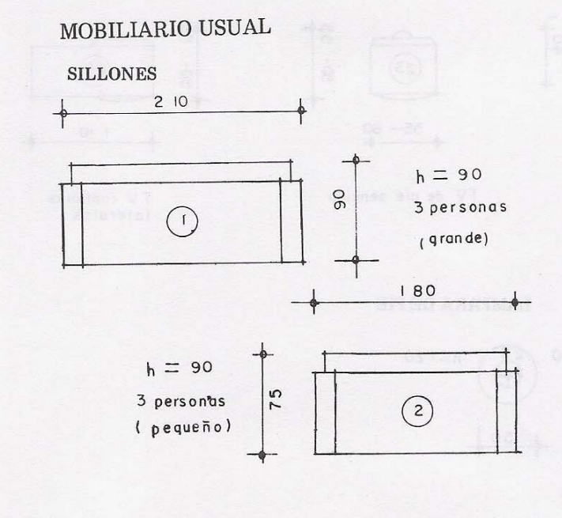
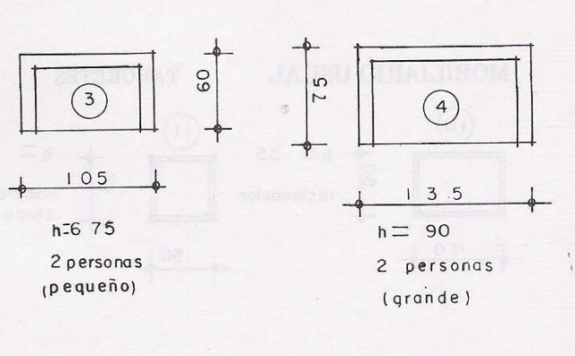
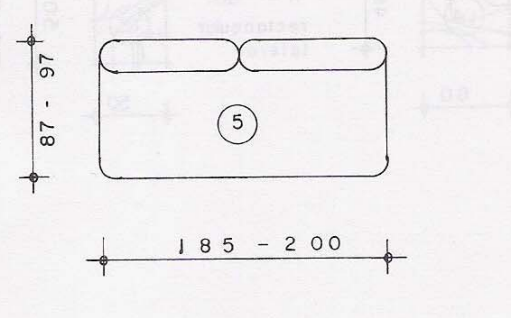
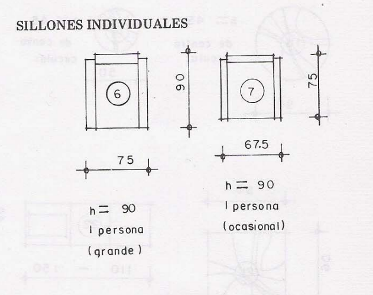
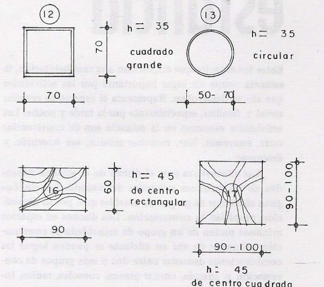

Medidas de los muebles de una Sala
Medidas para Sillones Grandes
Encontramos los sillones grandes de una sala, tendremos un tamaño máximo y también un tamaño pequeño
son sillones de 3 asientos, bastante grandes que a su vez son bastante cómodos, para que tanto húespedes
como visitantes se sientan cómodos, así pues encontramos medidas de 2.10 x .90 y de .75 x 180

Medidas para Sillones Medianos
Tenemos pues, el tamaño grande que será de .75 x 1.35 y el pequeño de 105 x 60
son sillones de 2 asientos, es importante conocer la medida a la hora de que hagamos nuestros diseños.

Medidas para Sofá cama
Este tipo de sofá es ideal para espacios pequeños y en diseños donde el espacio sea muy cerrado
la medida de un sofá cama varía entre los .97 a .87 de ancho y de largo entre 1.85 a 2.00 mts.
Puede variar teniendo las medidas de una cáma imperial hasta una twin, la verdad es que apenas son entre 10 y 15 cm de diferencia

Medidas para un sofá indidvidual
Encontramos dos tipos de sofás individiuales, el primero si queremos el tamaño grande de .75 x .90
y el segundo que es más pequeño, este será de tipo ocacional 67.5 x 75
También encontramos uno mediano de .75 x .75 que es el más usados en diseño y una silla con brazos en sala
La silla tiene un tamaño de .50 x .50, tal


Medidas para mesas de sala
Hay un amplio catálogo para elegir a la hora de diseñar una sala, por ejemplo encontramos un máxmimo de tamaño de mesa de 1 mt 1 mt
y otras más pequeñas de .50 x .50, encontramos también mesas de sala circulares, el alto de estas tiene alrededor de 35 cm como mínimo
pasando por 45cm llegando hasta los 60cm de altura


¿Porqué es Importante?
Es importante tomar la medidas necesarias tanto mínimas como máximas, empezando porque a partir de las mismas se diseñarán los distintos ambientes
y de este modo se puede hacer uno como diseñador o arquitecto las medidas que serán necesarias, también es importante por el tipo de diseño que
el cliente requiera, ya sea si prefiere sillones cómodos pero grandes o pequeños que ahorrarán espacio
Presiona el siguiente link para volver al menú principal de las medidas de una casa: Medidas de una Casa.
Si quieres tener más información sobre los tamaños de los muebles de una cocina te invitamos a que puedas acceder al siguiente link: Medidas de los muebles de una Cocina.